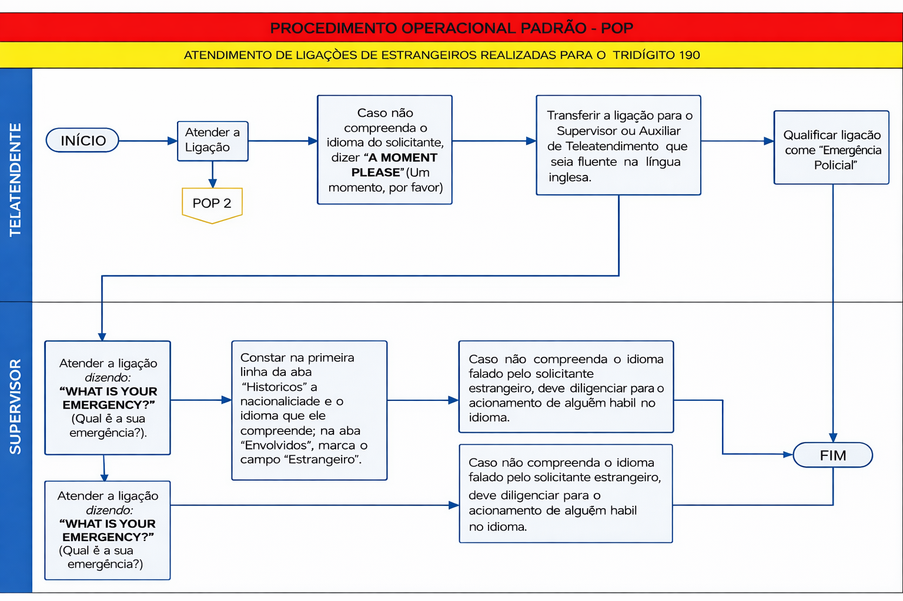

1. RESULTADOS ESPERADOS
1.1 Otimizar o atendimento de ligações de estrangeiros realizadas para o tridígito de emergência policial 190.
2. PROCEDIMENTOS BÁSICOS
2.1 O Teleatendente deve utilizar linguagem formal e respeitosa, tratando o solicitante pelo pronome SENHOR(A).
2.2 O Teleatendente deve atender a ligação dizendo: “CENTO E NOVENTA. QUAL É A SUA EMERGÊNCIA?”, de forma clara e audível. Se não houver resposta, repetir por até três vezes.
2.3 Caso não compreenda o idioma do solicitante, dizer: “A MOMENT PLEASE” e transferir a ligação ao Supervisor ou Auxiliar fluente.
2.4 Qualificar a ligação como “Emergência Policial” no Painel de Teleatendimento.
2.5 O Supervisor ou Auxiliar deve atender dizendo: “WHAT IS YOUR EMERGENCY?” e formular perguntas básicas (O quê? Quando? Onde? Quem? Como? Por quê?).
2.6 Na criação da chamada, registrar nacionalidade e idioma na aba Históricos.
2.7 Na aba Envolvidos, marcar o campo “Estrangeiro”.
2.8 Caso não haja compreensão do idioma, o Supervisor deve diligenciar apoio adequado.
3. ATIVIDADES CRÍTICAS
3.1 Repetir a verbalização por até três vezes, intercalando com silêncio, quando não houver resposta.
3.2 O Supervisor deve acalmar o solicitante estrangeiro e conduzir a coleta das informações essenciais.
4. AÇÕES CORRETIVAS
4.1 Clicar no campo “ATENDIMENTO DE ESTRANGEIROS” no Painel de Teleatendimento.
4.2 Em caso de transferência, informar assunto e número do telefone da ligação em curso.
5. FRASEOLOGIA DE APOIO
- "I’m here to help."
- "What is your emergency?"
- "What is the address of the emergency?"
- "Can you tell me your current location?"
- "Could you please spell the street name?"
- "What is your name?"
- "Is it happening right now?"
- "Our resources are on the way!"
- "Now, tell me exactly what happened."
5.1 FLUXOGRAMA
6. FUNDAMENTAÇÃO LEGAL OU DOUTRINÁRIA
6.1 Regimento Administrativo e Disciplinar dos Teleatendentes e Auxiliares do CIAD (18/10/2010).
6.2 Regimento Interno do CIAD (28/03/2011).
6.3 Regimento Interno do COPOM (01/12/2014).
6.4 Instrução 3.03.26/2018 – CG.